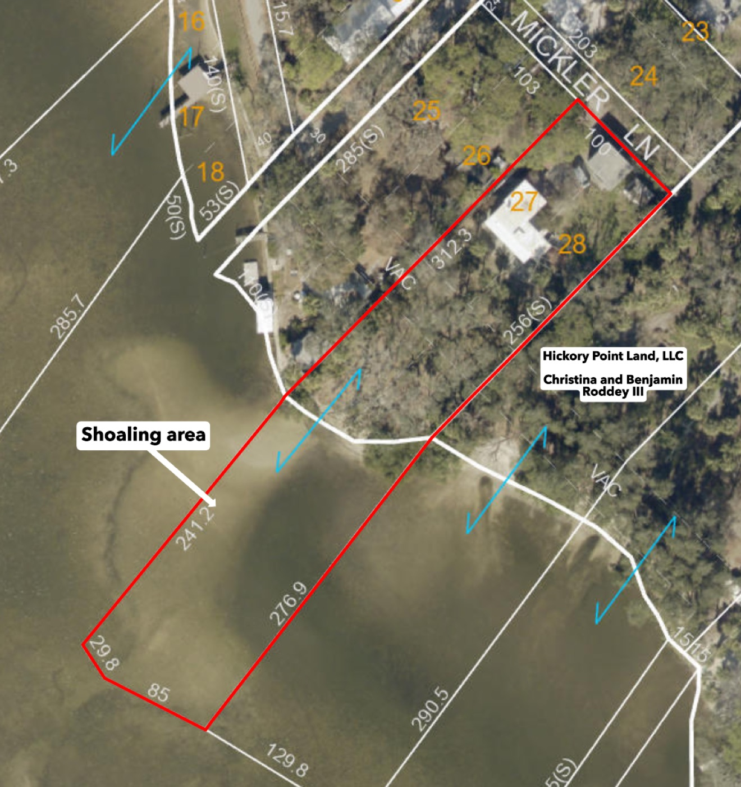
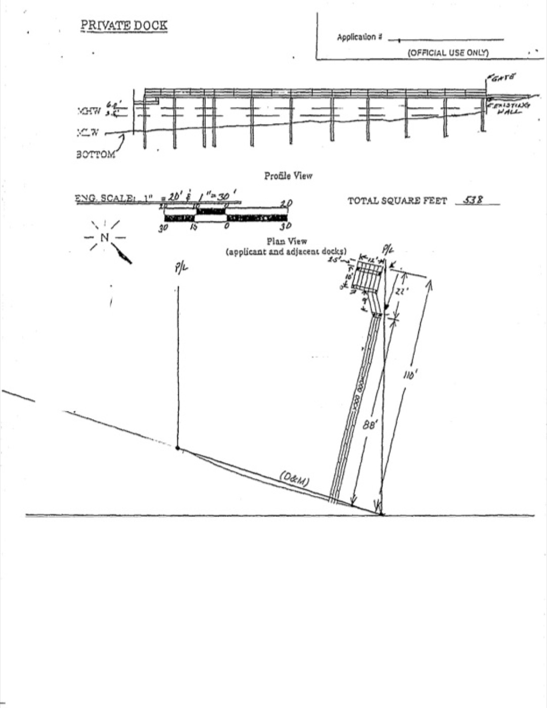

| Category | Score | Why |
|---|---|---|
| Water Access | 4 | Lower Anclote River, ~1 mi to the mouth, ~3 mi to open Gulf, bridge-free. ~8–12 min run. Federal 9-ft channel within reach (shoaled to ~7.5–8.4 ft). Not direct open-Gulf frontage → 4. |
| Dock & Boat | 3 | Built new with the project — feasibility done, 538 sf drawing, $44,743 estimate. Held at 3 by shallow shore (long dock + possible dredging) and the Aquatic-Preserve / seagrass permit gate. |
| Seawall / Shoreline | 2 | County shows no seawall; natural/shoaling edge. Stabilization or a living shoreline built into the project; Aquatic-Preserve constraints + the unknown keep it conservative. |
| Flood & Insurance | 2 | FEMA Zone VE, BFE 12–16 ft. A new elevated home insures ~$1.2–5K/yr (up from ~$8–20K for the old house) — feasible, but VE velocity + Evac-A risk caps it. |
| House → Lot buildability | 4 | Scored as a build lot: R-4, 1.31 ac, clean setbacks, demo straightforward, VE elevation standard for the area, dock feasibility already done. Short of 5 only because there are no plans/permits yet. |
| Lot Size & Layout | 5 | 1.31 acres — exceptional for waterfront (most are 0.16–0.25 ac). Room for everything. |
| Views & Orientation | 4 | Wide-open SW view across the ~500+ ft-wide river; afternoon/sunset light over water. River-to-far-bank, not open-Gulf horizon. |
| Location & Amenities | 4 | Tarpon Springs area. AdventHealth ~11.6 min, grocery nearby, Sponge Docks a short drive, ~40 min Tampa. Held from 5 by the far-NW gravel-lane edge + industrial corridor. |
| Beach Proximity | 3 | Fred Howard Park ~5.4 mi / ~15 min; Sunset Beach ~5.5 mi / ~15 min. Regular-activity distance, not walkable. |
| Emergency Care | 4 | AdventHealth North Pinellas ~4.5 mi / ~11.6 min — full ER (stroke + cardiac). Not a trauma center; 12 min is marginal in traffic. |
| EMF Exposure | 4 | No HV lines/substation within 0.5 mi; one concealed cell tower ~0.35 mi. Duke 230 kV substation + power plant ~1 mi away, across the river. |
| Dog-Friendly | 5 | 1.31 acres, no HOA, fenceable, quiet dead-end lane. About as good as it gets for Casper — just fence the water edge. |
| Neighborhood | 2 | Hickory Point RV Park is the SE neighbor; industrial-leaning Anclote Rd corridor + work-release center ~0.9 mi. Offsets: ZIP crime grade A, the 2019 commercial rezone next door was denied. Biggest soft weakness. |
| Hurricane Protection | 3 | A new elevated code build hardens the structure (4–5 alone), but this is the worst surge micro-zone in the county — Evac A, Helene 7.2 ft a mile away, four storms in two years. |
| Internet | 3 | Frontier Fiber (up to 7 Gbps) is city-wide but unconfirmed at this gravel-lane address. Spectrum cable near-certain. Starlink + Brady relay as backup. Verify Frontier — could be a 5. |
| Price | 5 | $975K land is within budget. But all-in with the elevated build runs ~$1.8–2.5M finished — negotiating the land down is what keeps it comfortable. |
The seller's contractor (Decks Docks & Seawalls of Florida) reviewed it as "very well suited" for a residential dock + boat lift. Decks Docks & Boatlifts priced a new build at $44,743 (lift upsizes: 10K lb $16.7K · 16K $18.9K · 20K $22.8K). The permit-style drawing below is 538 sf — well inside what the lot can permit.

| Marker | Number |
|---|---|
| List price (ask) | $975,000 |
| Pinellas County just/market value (2025) | $755,447 |
| Comp-implied fair land value | ~$650,000–800,000 |
| Recommended opening offer | $700,000 cash |
| Firm walk-away ceiling | $800,000 |
| All-in finished (land + elevated build + dock + shoreline) | ~$1.8–2.5M |
Anchor: the county value, a soft post-Helene waterfront market, and the nearest finished comp (1149 Marina Dr) selling 29% under list after 132 days. The land is priced above market — so buy the dirt at dirt value, then build.